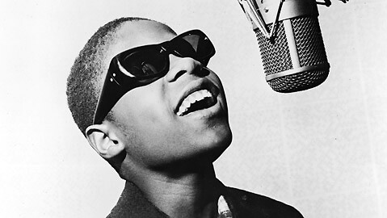
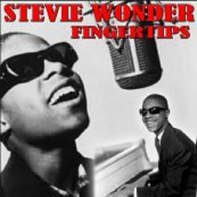

Video
His live version was recorded at the Regal Theater in Chicago in June 1962. Marvin Gaye on drums and Stevie playing the harmonica was number 1 ranking Billboard USA on August 21, 1963. Born to be a star, with only 12 years, performed a live album for Motown got one of the first number 1, the youngest person to achieve simultaneously the number 1 singles and albums.

It was Recorded Live: The 12 Year Old Genius and within a delightful song called Fingertips Part II, his first number 1. A live recording made in June 1962 during a Motortown Revue at the Regal Theater in Chicago, Illinois. In this moment a little Stevie Wonder showed his skills to the bongos and harmonica, while interpretation was exploding wild, spontaneous, and rampant pure frenzied pace swing, showing a star that would result in a musical genius of our time.
An unparalleled talent whose star is still alive over the years, strongly radiating light.

Lyrics
'Yeah'
'Yeah'
talking:
Ladies and gentlemen, now I'm going to do a song
taken from my album, 'The Jazz Soul of Little Stevie'
The name of the song is called, umm, 'Fingertips'.
Now, I want ya to clap yo' hand, come on.
Come on!
Yeah!
Stomp yo' feet
Jump up and down, do anything that you wanna do!
Yeah!
Yeah!
-instrumental and Stevie harmonica:
Ev'rybody say, 'Yeah'
(Yeah, yeah!)
Say, yeah!
(Yeah!)
Say, yeah
(Yeah!)
Yeah?
(Yeah!)
Yeah! Yeah! Yeah!
(instrumental and Stevie harmonica)
un pequeño golpe -a so-whoa-whoa-whoa-oh-oul
Yeah-yeah, yeah-yeah-yeah-yeah
Clap your hands, just a little bit louder
Clap your hands, just a little bit louder
(and Stevie harmonica)
Stevie play:
I know that ev'rybody had, yeah
Ev'rybody have a good time
So, if you want me to
If you want me to
I'm gonna swing a-song
Yeah, just-a one mo' time
Be sure I'll come back
Just-a one more time
When I come back
So, good-bye
(harmonica)
Presenter talking:
How about it?
Let's hear it for him, huh?
Little Stevie Wonder
Take a bow, Steveland
(instrumental)
(harmonica)
(piano)
unknown woman in the audience: 'Yeah!, Harry, get down!'
band members: (What key? What key?)
Otros miembros de la banda: (Been tellin' you)
Miembro de la banda: (You been tellin' me, what?)
(instrumental)
(Batería)
Stevie: Hey!
Come on!
Well, good-bye, good-bye
A-good-bye, good-bye
Good-bye, good-bye, good-bye
I'm gonna go, yeah
I'm gonna go, yeah
Let's just swing it one more time!
(Instrumental and final Harmonica)
Presenter:
'How 'bout it?'
'Go ahead an shake this up for me real good'
'Stevie Wonder.'